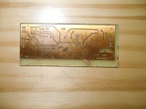
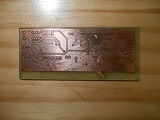
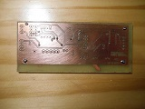

Vous n'êtes pas seuls dans l'Univers !

[
Le 3615 LE RETOUR - Fabrication
]
Cette page présente la fabrication des modules du 3615 LE RETOUR.
1) Fabrication
1-1) Version 1 - 2014
Quelques ellipses sont faites quant à la fabrication électronique du 3615 LE RETOUR.
Vous pouvez cependant consulter le processus de fabrication de la Petite Horloge, version 1, qui s'est déroulé de la même manière :
La Petite Horloge - Fabrication1-1-1) Gravure du circuit
L'insolation, la révélation, la gravure et le perçage se sont déroulées à huis-clos.
{kind=link}

{kind=link}
1-1-2) Soudage des composants
Personne n'était présent pour photographier la gratounette lors de son action pour nettoyer la carte.
{kind=link}

{kind=link}
Aucun procédé de métallisation n'est disponible, c'est pourquoi les vias sont ici des morceaux de fil de fer passés à la main !
{kind=link}

{kind=link}
{kind=link}
{kind=link}
{kind=link}
1-1-3) Programmation du microcontrôleur
Un PICkit 2, qui a déjà beaucoup d'heures de vol, a servi à programmer le microcontrôleur PIC18F26J11.
1-1-4) Intégration dans le boîtier
Le boîtier vise à protéger la carte et à intégrer des connecteurs pour le raccord avec le Minitel et l'autre boîtier.
Ce lien peut être un câblage direct ou un lien radio, dans ce cas un module spécialisé est connecté à l'ensemble.
2) Sujet associé
La fabrication du 3615 LE RETOUR a suivi les étapes similaires à celle de la Petite Horloge :
Commentaires (0)
Ajouter un commentaire